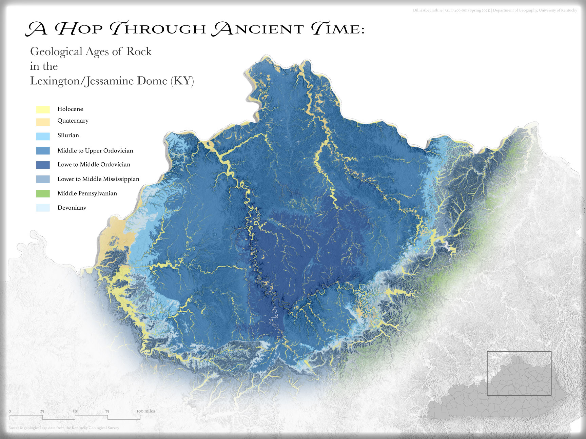
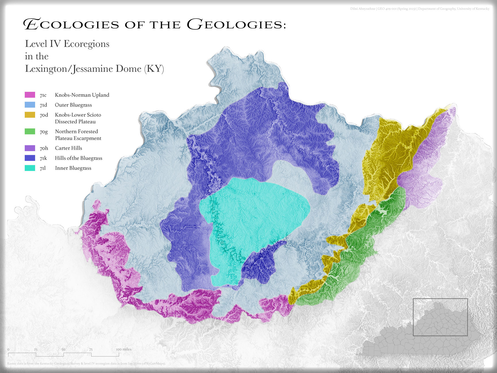
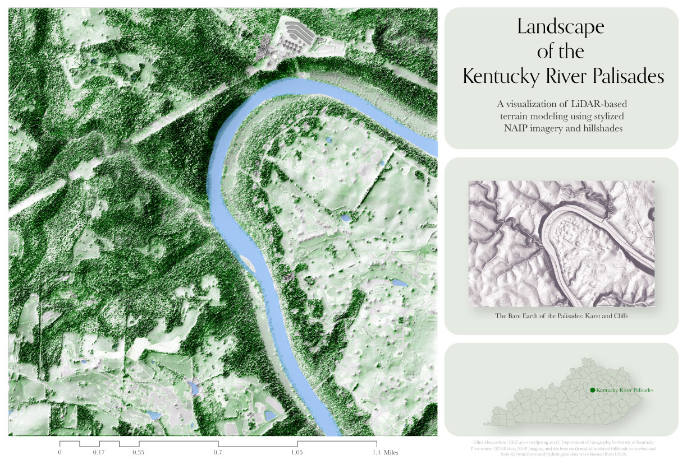

A Glace at the Kentucky River Palisades and Camp Nelson
Brief, yet bold title for project
Subtitle with when and where
Project Background
The Lexington/Jessamine dome is the northern part of a massive geological uplift known as the Cincinnati Arch. This dome features some of the oldest rock formations in Kentucky, with those in the middle (the Inner Bluegrass region) being more than 450 million years old. Much of this older rock is in the Lexington Limestone formation, or more specifically, in the Camp Nelson formation near the Camp Nelson National Monument.
Project Goals
This project sought to map the Lexington/Jessamine dome through the lenses of the geological age of rock formations found within and the ecoregions that are most common on the dome. Mapping of geological age fulfilled the goal of exploring the spatial relationships between rock formations of similar ages. Similarly, mapping of level IV ecoregions fulfilled the goal of exploring spatial relationships between the types of spread of ecoregions and their connection to underlying rock formations and their ages, which have shown a distinct similarity in bounds.
Data/Visualization Attributions
Visualizations for this project were created from LiDAR and elevation data obtained from KyFromAbove and manipulated in ArcGIS Pro and Blender. Additional data was also obtained from USGS (hydrology data), the Kentucky Geological Survey (geological age data), and Ian Horn (KyGovMaps) (level IV ecoregion data). Background information regarding the dome, the Palisades, and Camp Nelson were obtained from the following sources, repectively: the Kentucky Geological Survey, Kentucky Tourism, and the Kentucky Geological Suvey (story map). All data was obtained and visualized April through early May, 2023.
This page and its visualizations were created by Dilni Abeyrathne for GEO 409 (Spring 2023) in the Department of Geography, University of Kentucky.
Geological Ages of Rock within the Dome
A visualization of the geological age of various segments of the dome. (Link to high-resolution PDF)
Level IV Ecoregions
A visualization of the specific level IV ecoregions found within the dome. (Link to high-resolution PDF)
The Palisades: A Terrain View
A stylization of LiDAR-derived elevation data of the Palisades. (Link to high-resolution PDF)
Camp Nelson: A Terrain View
A stylization of LiDAR-derived elevation data of Camp Nelson. (Link to high-resolution PDF)